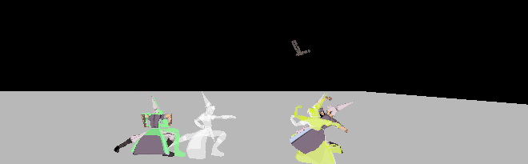
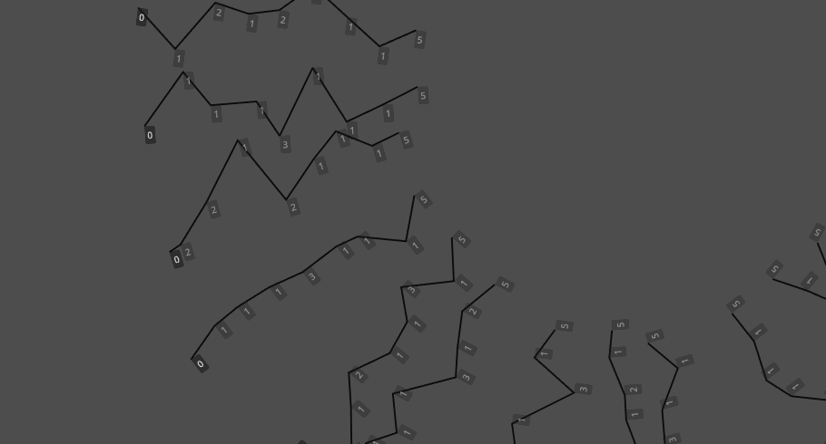

Dropper
college graduation project

3D turn-based fighting game. inspired by YOMI Hustle
read more
"I don't want to build statues. I want to build pedestals on which these statues stand."
did a lot of work on turn-based combat systems.
also simple game concepts and backend work for other games
godot is my domain, expanding into C#
college graduation project

3D turn-based fighting game. inspired by YOMI Hustle
read more
GMTK Game Jam 2026. team effort. worked on language renderer
language discovery game
read more
solo developed. the beggining of all. (no good images available)

turn-based battler
read more